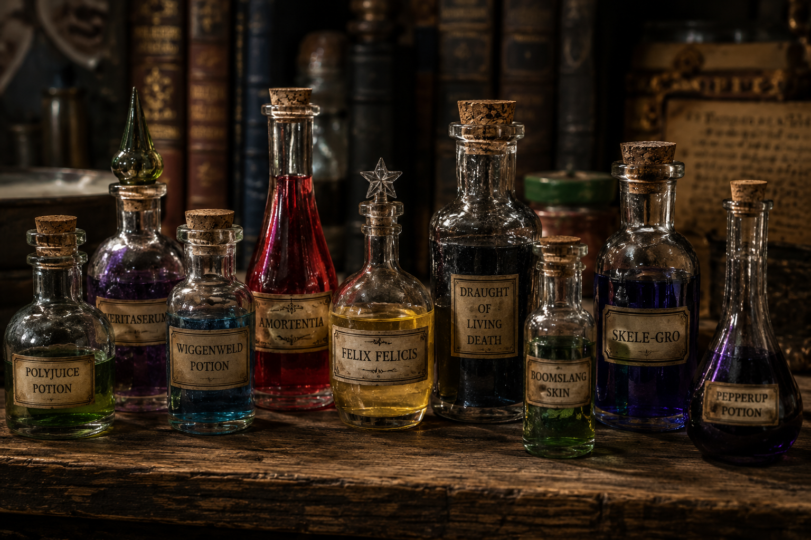
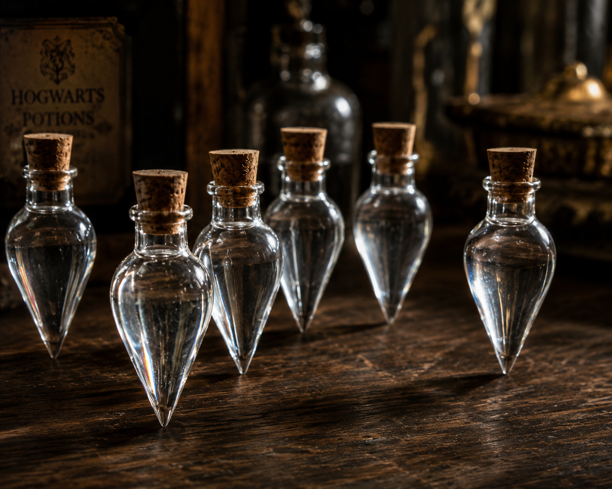
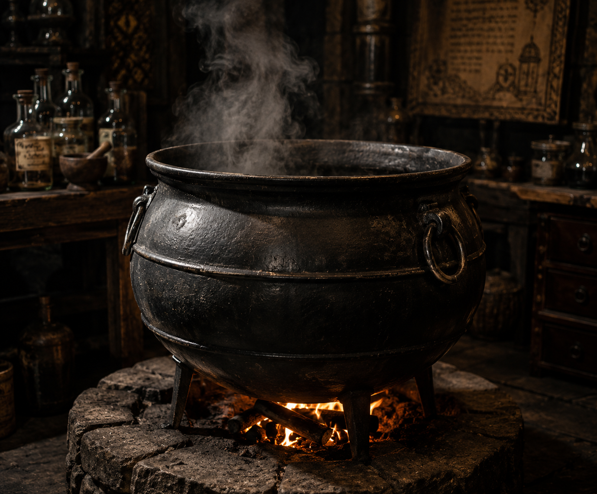
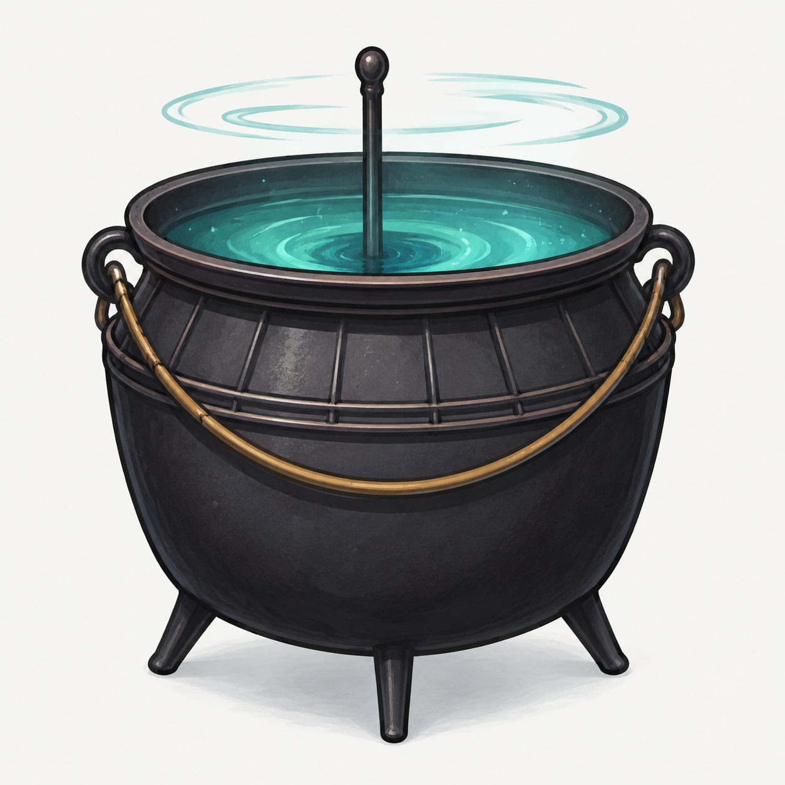
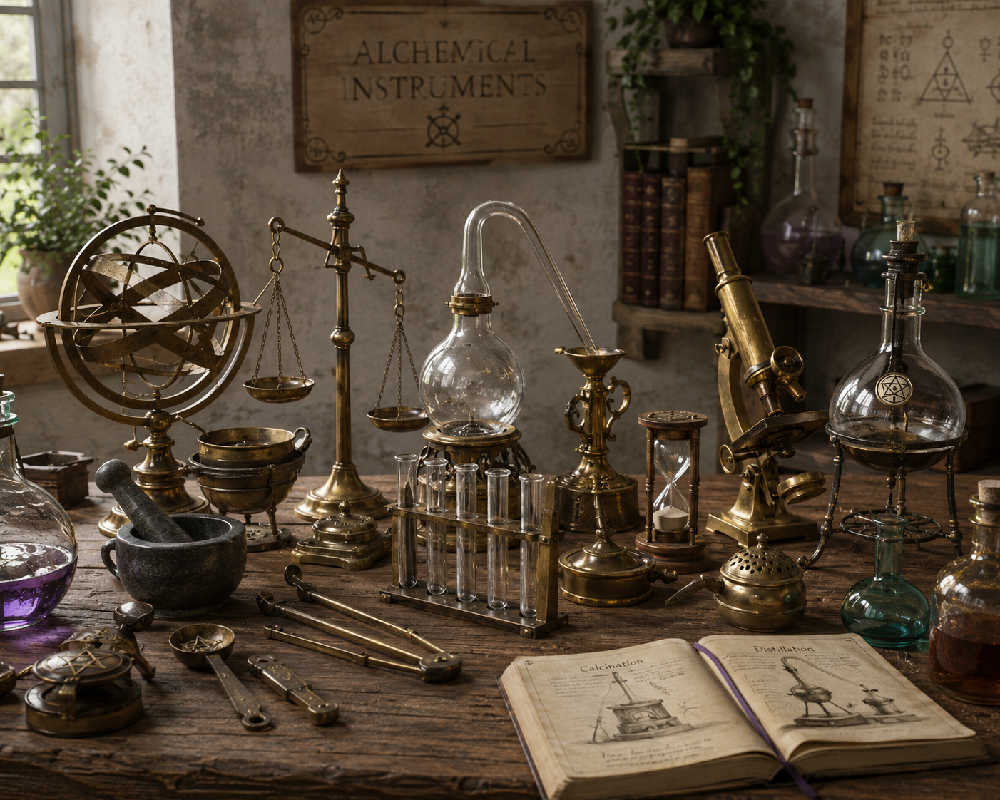
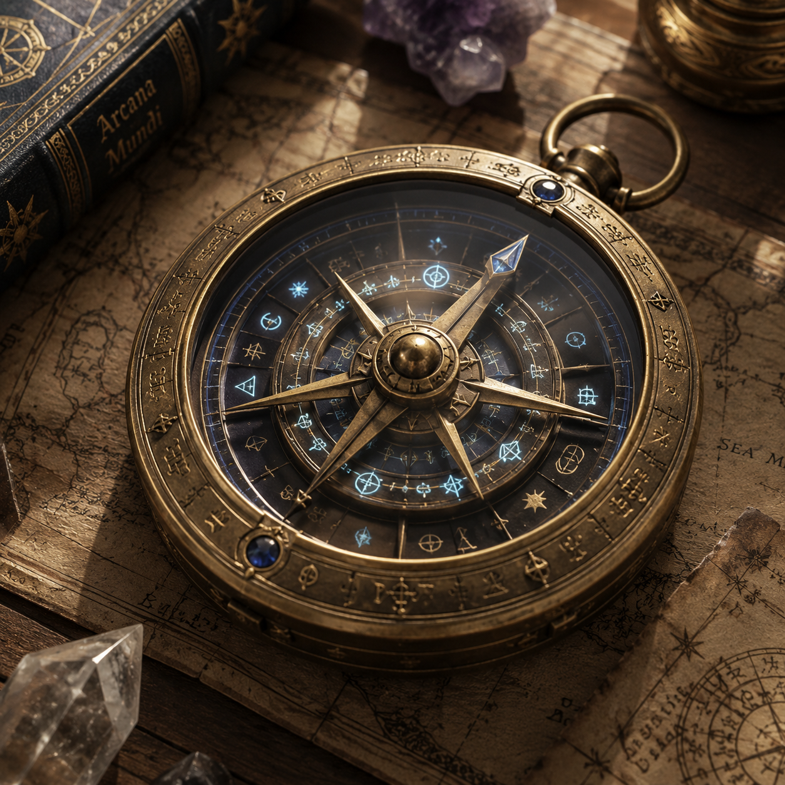

THE ART OF ALCHEMY
Alchemy stands as one of the oldest and most revered magical disciplines, transforming understanding of the natural world into practical tools and enchanted artifacts. The practice requires not merely magical knowledge but also meticulous craftsmanship, precision measurement, and intimate understanding of materials and their properties.
From the delicate brass scales that measure ingredients to the milligram, to the enchanted cauldrons that respond to magical intention, each tool in an alchemist's arsenal serves a specific purpose in the grand tradition of magical transformation and creation. These instruments enable wizards and witches to practice their craft safely and effectively.
ALCHEMICAL INSTRUMENTS & EQUIPMENT

POTION VIALS
Essential equipment for any potioneer. These small glass or crystal containers are used to store harvested ingredients, extract memories for a Pensieve, or safely bottle finished, volatile concoctions.
Standard glass vials are sufficient for most schoolwork, but highly corrosive or dangerously potent potions require reinforced vials enchanted to prevent shattering or melting.
CRYSTAL PHIALS
A premium step above standard glass, crystal phials are often demanded by strict Potions Masters like Severus Snape. Crystal does not react with acidic ingredients and preserves the efficacy of highly sensitive potions.
They are significantly more expensive and delicate to handle, often carried in protective leather or velvet-lined cases to prevent breakage during transport.


CAULDRONS
The foundational tool of all alchemy. Cauldrons come in various sizes and materials, including pewter (standard for Hogwarts first-years), brass, copper (which brews faster), and pure gold.
Each material reacts differently to heat and magical ingredients. A poorly cast or excessively thin-bottomed cauldron runs the risk of melting through and causing disastrous dungeon fires during complex brewing.
SELF-STIRRING CAULDRON
A modern magical convenience. The self-stirring cauldron automatically agitates its contents, saving the potioneer from the grueling physical labor of stirring thick, viscous mixtures for hours on end.
While banned in N.E.W.T. level exams where precise wand-stirring technique is graded, they are immensely popular in professional apothecaries and households for brewing standard remedies and household cleaners.


ALCHEMICAL INSTRUMENTS
The delicate tools that line the desks of master potioneers: brass scales for measuring powdered horn to the exact milligram, silver daggers for crushing bezoars or juicing Sopophorous beans, and mortars and pestles.
Proper maintenance of these instruments is vital, as cross-contamination from a poorly cleaned brass scale can turn a simple Cure for Boils into a highly toxic explosion.
MAGICAL COMPASSES
Used more in ancient alchemy and navigation than standard brewing, these intricate brass and glass instruments do not necessarily point North. Instead, they can be calibrated to point toward magical ley lines, specific rare ingredients, or even danger.
They are complex to read, often possessing multiple spinning hands, celestial charts, and runic dials that require advanced arithmancy to interpret correctly.
